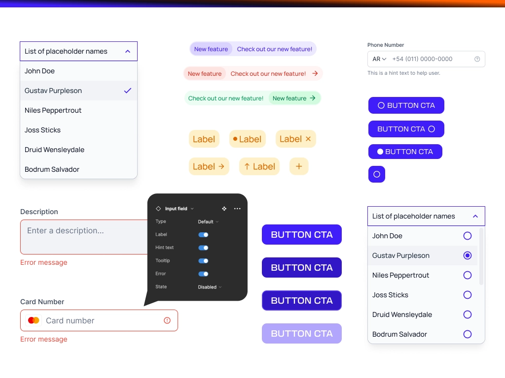
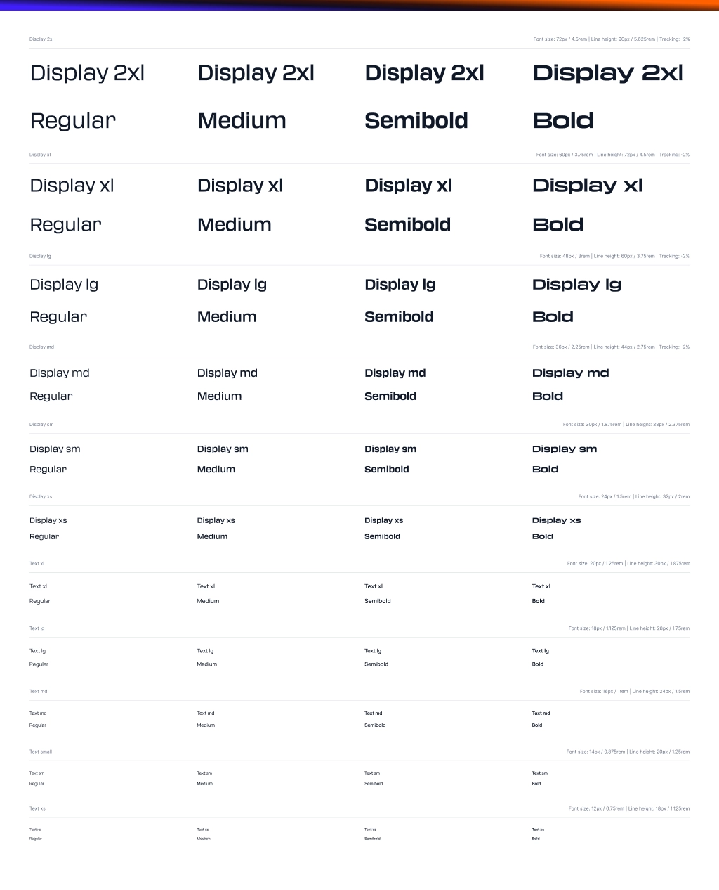
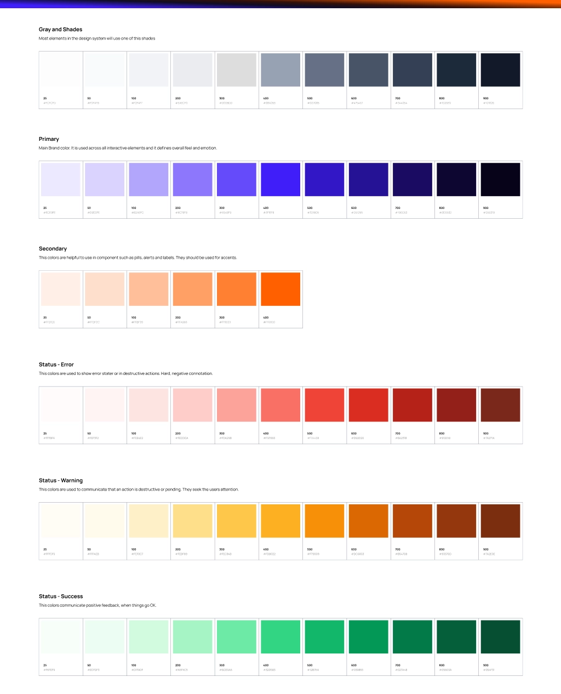

← Back
Building a Design System from Scratch // Empowering Consistency and Efficiency in e-commerce Development
5 min read - ux/ui / design system

As the Product Designer at Balloon Group—an agency specializing in e-commerce solutions and development—I embarked on the journey of building and developing a design system from scratch. In this article, I will dive deep into the reasons behind my decision, sharing my perspective on the need for a design system and outlining the step-by-step approach I took to ensure its successful implementation.
Identifying the Need.
Due to the nature of the company, we work with various clients, with their own styleguides, different needs and requirements, it can be hard to find a justification for a Design System of our own. However, as a product designer, I push for consistency, efficiency and scalability. Tired of relying on meetings, team-syncs and group decisions to mantain consistent UX patterns, something needed to be done. Obtaining buy-in from higher ups was quite easy once I explained the following reasons.
- Project Variation: Working on various projects, I noticed common design patterns, components, and user flows that recurred across clients. This observation highlighted the potential for standardization and the need for a design system to capitalize on shared resources.
- Efficiency Gaps: Building websites from scratch for each project often resulted in redundant design and development efforts. Assessing the time spent reinventing the wheel revealed the opportunity to improve efficiency through a centralized design system.
- Client Satisfaction Implementing a design system ensures a consistent experience for our clients' end users, enhancing their satisfaction and trust in our agency's work. By delivering high-quality, standardized designs, we can establish a reputation, while furthering our client relationships and attracting new business opportunities.
Developing the Design System.
- Research and Analysis: I began by researching existing design systems and frameworks to gain insights into best practices. I analyzed the common elements and patterns present in our past projects to identify potential components for our design system.
- Collaboration: I engaged with development teams in collaborative discussions to gather their insights and perspectives. We encouraged open communication and created a shared understanding of the benefits a design system can offer.
- Component Definition: I identified and documented the core of our design system, including tokens such as typography, color palettes, etc, and components like buttons, forms, and navigation elements. I established clear guidelines for their usage, behavior, and customization to ensure consistency across projects.
- Iterative Development: An iterative approach to building our design system, allowes for continuous improvement and refinement. Feedback from our team is higly wanted, as well as actively incorporating their suggestions to enhance usability, efficiency, and effectiveness.


Benefits and Future Implications.
A design system minimizes redundant work, allowing my team to focus on higher-value tasks, resulting in improved productivity and faster project delivery. By adhering to defined design standards, our agency can establish a strong brand identity and consistency across all client projects, fostering trust and recognition in the market.
Having a Design System of our own, although every project has a different styling, it accommodates the growing demands of multiple projects simultaneously, ensuring quality outputs and reducing the risk of errors or inconsistencies. he design system serves as a shared language and reference point for our design and development teams, a unified and unique source of truth.
Conclusion.
As a Product Designer for Balloon Group, I recognized the need to build and develop a design system from the ground up. By acknowledging the importance of consistency, efficiency and scalability, I embarked on a journey to empower the teams and enhance our website development process. Through thorough research, collaboration and iterative development, a proper Design System that brought numerous benefits, including collaboration, speed and consistency, was established.
Next Steps.
- - Documentating the Design System. (Currently researching tools for this, looking into Zeroheight)
- - Integration with Storybook (In progress)
- - Bare-bones variant. I want to build an unbranded version of the DS. This can further be used while working with clients
- - Training and adoption: Work with the teams, offer workshops, and foster adoption and testing throughout the company